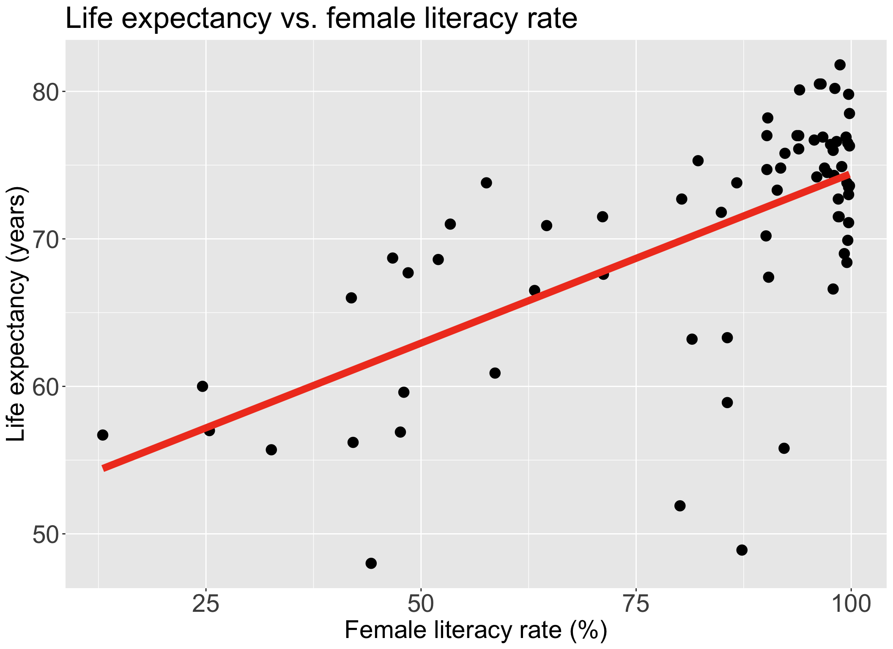
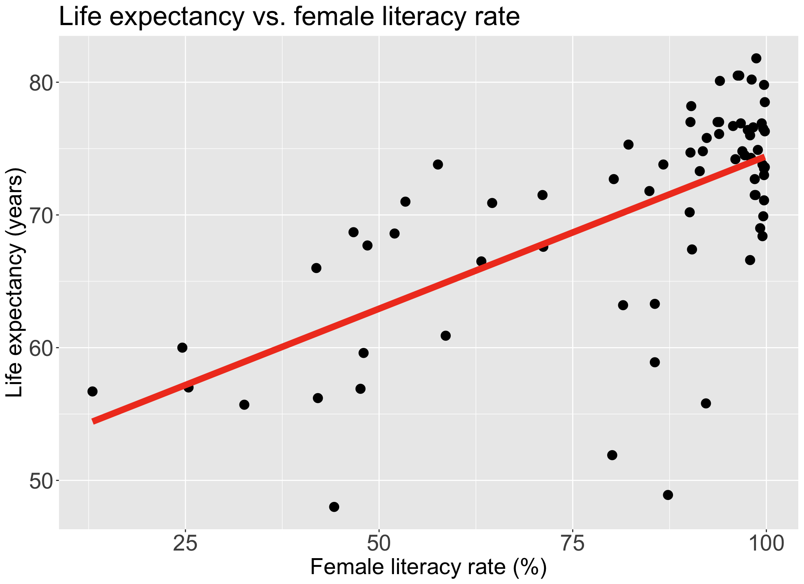
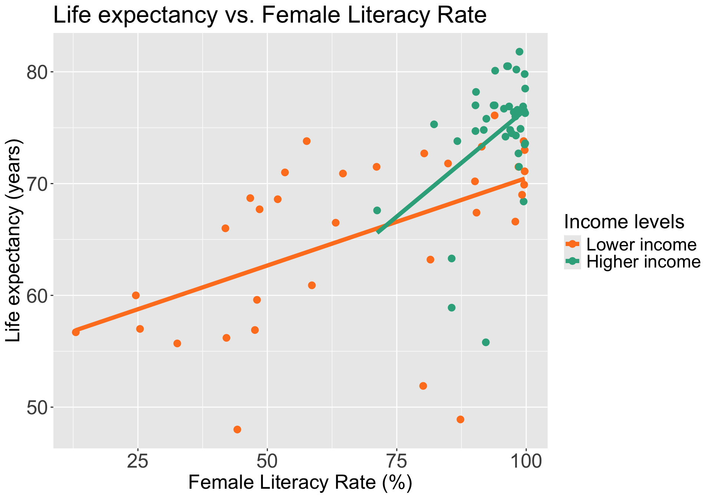
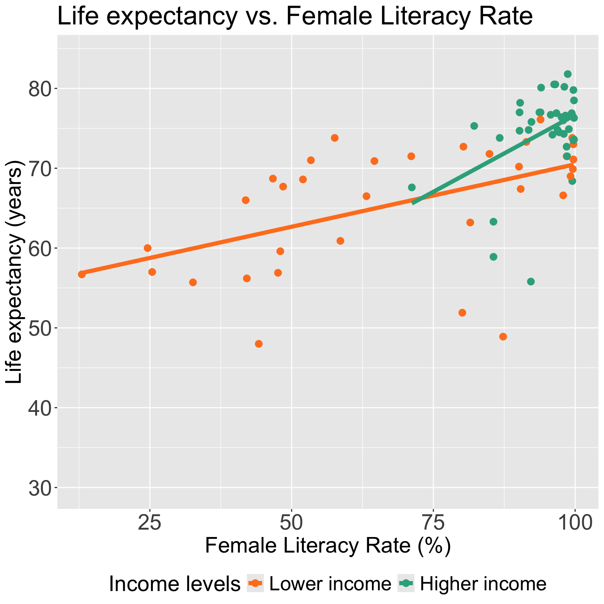
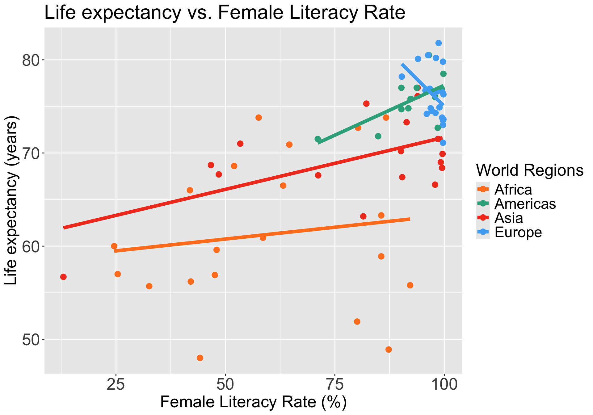
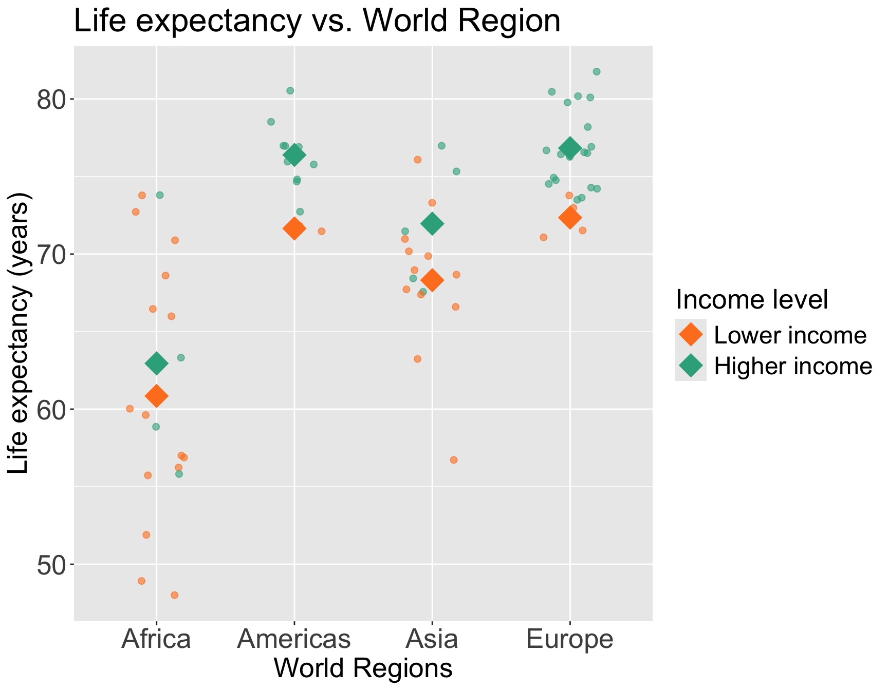
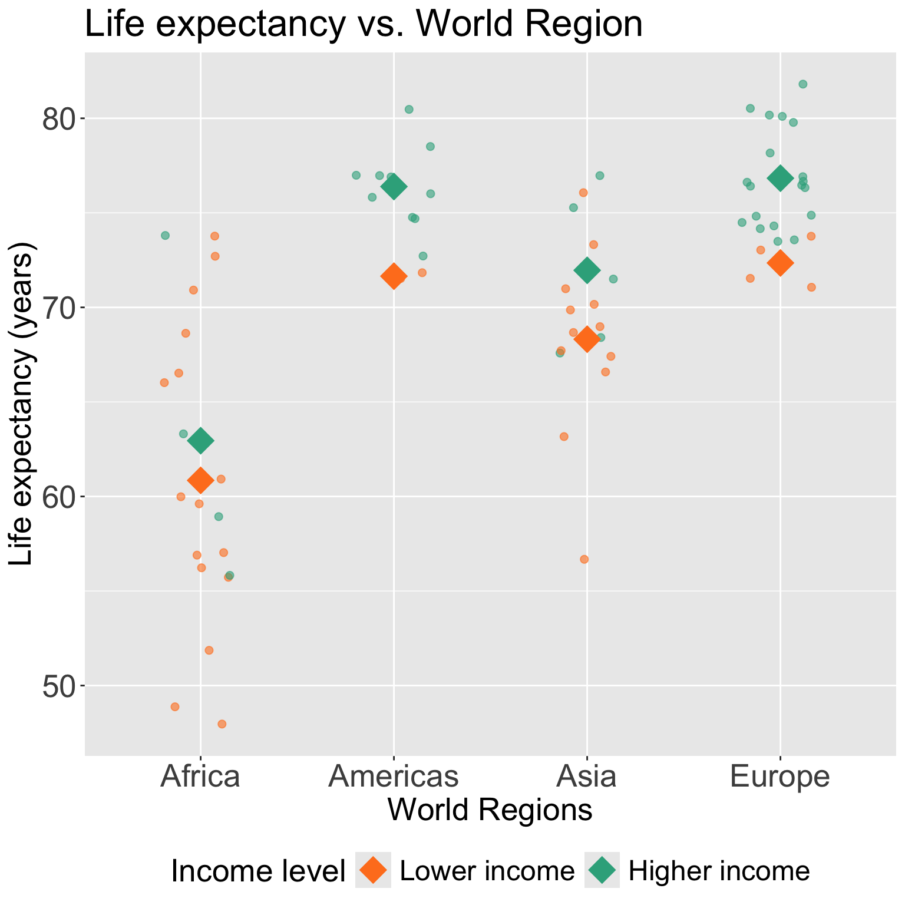
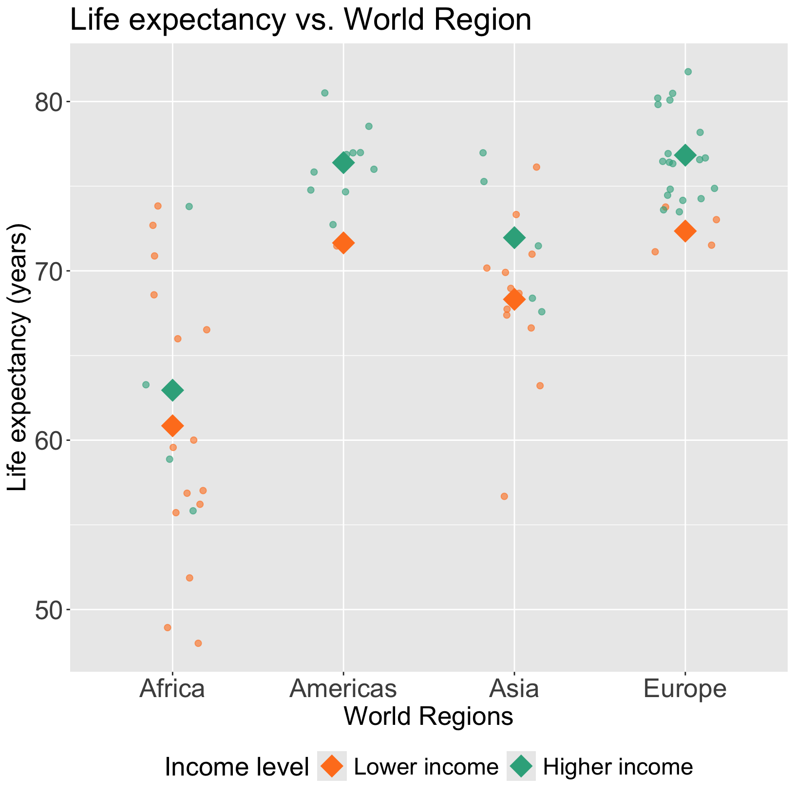

Warning: Using `size` aesthetic for lines was deprecated in ggplot2 3.4.0.
ℹ Please use `linewidth` instead.`geom_smooth()` using formula = 'y ~ x'
Next time:


Model Selection
Building a model
Selecting variables
Prediction vs interpretation
Comparing potential models
Model Fitting
Find best fit line
Using OLS in this class
Parameter estimation
Categorical covariates
Interactions
Model Evaluation
Model Use (Inference)
Warning: Using `size` aesthetic for lines was deprecated in ggplot2 3.4.0.
ℹ Please use `linewidth` instead.`geom_smooth()` using formula = 'y ~ x'
A confounding variable, or confounder, is a factor/variable that wholly or partially accounts for the observed effect of the risk factor on the outcome
A confounder must be…

\[Y= \beta_0 + \beta_1X_{1}+ \beta_2X_{2} + \epsilon\]
And we assume that every level of the confounder, there is parallel slopes
Note: to interpret \(\beta_1\), we did not specify any value of \(X_2\); only specified that it be held constant
The above model assumes that \(X_{1}\) and \(X_{2}\) do not interact (with respect to their effect on \(Y\))
epidemiology: no “effect modification”
meaning the effect of \(X_{1}\) is the same regardless of the values of \(X_{2}\)
We have seen a plot of Life expectancy vs. female literacy rate with different levels of food supply colored (Lesson 8)
In our plot and the model, we treat food supply as a confounder
If food supply is a confounder in the relationship between life expectancy and female literacy rate, then we only use main effects in the model:
\[\text{LE} = \beta_0 + \beta_1 \text{FLR} + \beta_2 \text{FS} + \epsilon\]
mr1 <- lm(LifeExpectancyYrs ~ FemaleLiteracyRate + FoodSupplykcPPD,
data = gapm_sub)
(mr1_2d = ggPredict(mr1, interactive = T))An additional variable in the model
An effect modifier will change the effect of \(X_1\) on \(Y\) depending on its value
Aka: as the effect modifier’s values change, so does the association between \(Y\) and \(X_1\)
So the coefficient estimating the relationship between \(Y\) and \(X_1\) changes with another variable


Interactions!!
We can incorporate interactions into our model through product terms: \[Y = \beta_0 + \beta_1X_{1}+ \beta_2X_{2} + \beta_3X_{1}X_{2} + \epsilon\]
Terminology:
main effect parameters: \(\beta_1,\beta_2\)
interaction parameter: \(\beta_3\)
Common types of interactions:
Synergism: \(X_{2}\) strengthens the \(X_{1}\) effect
Antagonism:\(X_{2}\) weakens the \(X_{1}\) effect
If the interaction coefficient is not significant
If the main effect of \(X_2\) is also not significant

Let’s say we only have two income groups: low income and high income
We can start by visualizing the relationship between life expectancy and female literacy rate by income level
Questions of interest: Is the effect of female literacy rate on life expectancy differ depending on income level?
`geom_smooth()` using formula = 'y ~ x'
Model we are fitting:
\[ LE = \beta_0 + \beta_1 FLR + \beta_2 I(\text{high income}) + \beta_3 FLR \cdot I(\text{high income}) + \epsilon\]
In R:
m_int_inc2 = lm(LifeExpectancyYrs ~ FemaleLiteracyRate + income_levels2 +
FemaleLiteracyRate*income_levels2, data = gapm_sub)OR
m_int_inc2 = lm(LifeExpectancyYrs ~ FemaleLiteracyRate*income_levels2,
data = gapm_sub)tidy(m_int_inc2, conf.int=T) %>% gt() %>% tab_options(table.font.size = 35) %>% fmt_number(decimals = 3)| term | estimate | std.error | statistic | p.value | conf.low | conf.high |
|---|---|---|---|---|---|---|
| (Intercept) | 54.849 | 2.846 | 19.270 | 0.000 | 49.169 | 60.529 |
| FemaleLiteracyRate | 0.156 | 0.039 | 3.990 | 0.000 | 0.078 | 0.235 |
| income_levels2Higher income | −16.649 | 15.364 | −1.084 | 0.282 | −47.308 | 14.011 |
| FemaleLiteracyRate:income_levels2Higher income | 0.228 | 0.164 | 1.392 | 0.168 | −0.099 | 0.555 |
\[ \begin{aligned} \widehat{LE} = & \widehat\beta_0 + \widehat\beta_1 FLR + \widehat\beta_2 I(\text{high income}) + \widehat\beta_3 FLR \cdot I(\text{high income}) \\ \widehat{LE} = & 54.85 + 0.156 \cdot FLR - 16.65 \cdot I(\text{high income}) + 0.228 \cdot FLR \cdot I(\text{high income}) \end{aligned}\]
\[ \begin{aligned} \widehat{LE} = & \widehat\beta_0 + \widehat\beta_1 FLR + \widehat\beta_2 I(\text{high income}) + \widehat\beta_3 FLR \cdot I(\text{high income}) \\ \widehat{LE} = & 54.85 + 0.156 \cdot FLR - 16.65 \cdot I(\text{high income}) + 0.228 \cdot FLR \cdot I(\text{high income}) \end{aligned}\]
For lower income countries: \(I(\text{high income}) =0\)
\[ \begin{aligned} \widehat{LE} = & \widehat\beta_0 + \widehat\beta_1 FLR + \widehat\beta_2 \cdot 0 + \widehat\beta_3 FLR \cdot 0 \\ \widehat{LE} = & 54.85 + 0.156 \cdot FLR - 16.65 \cdot 0 + \\ & 0.228 \cdot FLR \cdot 0 \\ \widehat{LE} = & 54.85 + 0.156 \cdot FLR\\ \end{aligned}\]
For higher income countries: \(I(\text{high income}) =1\)
\[ \begin{aligned} \widehat{LE} = & \widehat\beta_0 + \widehat\beta_1 FLR + \widehat\beta_2 \cdot 1 + \widehat\beta_3 FLR \cdot 1 \\ \widehat{LE} = & 54.85 + 0.156 \cdot FLR - 16.65 \cdot 1 + \\ & 0.228 \cdot FLR \cdot 1 \\ \widehat{LE} = & (54.85 - 16.65 \cdot 1) + \\ & (0.156 \cdot FLR + 0.228 \cdot FLR \cdot 1) \\ \widehat{LE} = & (54.85 - 16.65) + (0.156 + 0.228) \cdot FLR\\ \widehat{LE} = & 38.2 + 0.384 \cdot FLR\\ \end{aligned}\]
For lower income countries: \(I(\text{high income}) =0\)
\[ \begin{aligned} \widehat{LE} = & \widehat\beta_0 + \widehat\beta_1 FLR \\ \widehat{LE} = & 54.85 + 0.156 \cdot FLR\\ \end{aligned}\]
For higher income countries: \(I(\text{high income}) =1\)
\[ \begin{aligned} \widehat{LE} = & (\widehat\beta_0 +\widehat\beta_2) + (\widehat\beta_1 +\widehat\beta_3) FLR \\ \widehat{LE} = & (54.85 - 16.65) + (0.156 + 0.228) \cdot FLR\\ \widehat{LE} = & 38.2 + 0.384 \cdot FLR\\ \end{aligned}\]
`geom_smooth()` using formula = 'y ~ x'
\[ \begin{aligned} \widehat{LE} = & \widehat\beta_0 + \widehat\beta_1 FLR + \widehat\beta_2 I(\text{high income}) + \widehat\beta_3 FLR \cdot I(\text{high income}) \\ \widehat{LE} = & \bigg[\widehat\beta_0 + \widehat\beta_2 \cdot I(\text{high income})\bigg] + \underbrace{\bigg[\widehat\beta_1 + \widehat\beta_3 \cdot I(\text{high income}) \bigg]}_\text{FLR's effect} FLR \\ \end{aligned}\]
Interpretation:
\(\beta_3\) = mean change in female literacy rate’s effect, comparing higher income to lower income levels
where the “female literacy rate effect” equals the change in mean life expectancy per percent increase in female literacy with income level held constant, i.e. “adjusted female literacy rate effect”
In summary, the interaction term can be interpreted as “difference in adjusted female literacy rate effect comparing higher income to lower income levels”
It will be helpful to test the interaction to round out this interpretation!!
\[ LE = \beta_0 + \beta_1 FLR + \beta_2 I(\text{high income}) + \beta_3 FLR \cdot I(\text{high income}) + \epsilon\]
Null \(H_0\)
\(\beta_3=0\)
Alternative \(H_1\)
\(\beta_3\neq0\)
Null / Smaller / Reduced model
\[\begin{aligned} LE = & \beta_0 + \beta_1 FLR + \beta_2 I(\text{high income}) + \\ &\epsilon \end{aligned}\]
Alternative / Larger / Full model
\[\begin{aligned} LE = & \beta_0 + \beta_1 FLR + \beta_2 I(\text{high income}) + \\ &\beta_3 FLR \cdot I(\text{high income}) + \epsilon \end{aligned}\]
m_int_inc_red = lm(LifeExpectancyYrs ~ FemaleLiteracyRate + income_levels2,
data = gapm_sub)
m_int_inc_full = lm(LifeExpectancyYrs ~ FemaleLiteracyRate + income_levels2 +
FemaleLiteracyRate*income_levels2, data = gapm_sub)anova(m_int_inc_red, m_int_inc_full) %>% tidy() %>% gt() %>% tab_options(table.font.size = 35) %>% fmt_number(decimals = 3)| term | df.residual | rss | df | sumsq | statistic | p.value |
|---|---|---|---|---|---|---|
| LifeExpectancyYrs ~ FemaleLiteracyRate + income_levels2 | 69.000 | 2,407.667 | NA | NA | NA | NA |
| LifeExpectancyYrs ~ FemaleLiteracyRate + income_levels2 + FemaleLiteracyRate * income_levels2 | 68.000 | 2,340.948 | 1.000 | 66.719 | 1.938 | 0.168 |
Conclusion: There is not a significant interaction between female literacy rate and income level (p = 0.168).
We can start by visualizing the relationship between life expectancy and female literacy rate by world region
Questions of interest: Does the effect of female literacy rate on life expectancy differ depending on world region?
Let’s run an interaction model to see!
`geom_smooth()` using formula = 'y ~ x'
Model we are fitting:
\[\begin{aligned}LE = &\beta_0 + \beta_1 FLR + \beta_2 I(\text{Americas}) + \beta_3 I(\text{Asia}) + \beta_4 I(\text{Europe}) + \\ & \beta_5 FLR \cdot I(\text{Americas}) + \beta_6 FLR \cdot I(\text{Asia})+ \beta_7 FLR \cdot I(\text{Europe})+ \epsilon \end{aligned}\]
In R:
m_int_wr = lm(LifeExpectancyYrs ~ FemaleLiteracyRate + four_regions +
FemaleLiteracyRate*four_regions, data = gapm_sub)OR
m_int_wr = lm(LifeExpectancyYrs ~ FemaleLiteracyRate*four_regions,
data = gapm_sub)tidy(m_int_wr, conf.int=T) %>% gt() %>% tab_options(table.font.size = 35) %>% fmt_number(decimals = 3)| term | estimate | std.error | statistic | p.value | conf.low | conf.high |
|---|---|---|---|---|---|---|
| (Intercept) | 58.225 | 3.377 | 17.240 | 0.000 | 51.478 | 64.972 |
| FemaleLiteracyRate | 0.051 | 0.053 | 0.957 | 0.342 | −0.055 | 0.157 |
| four_regionsAmericas | −2.406 | 17.913 | −0.134 | 0.894 | −38.191 | 33.379 |
| four_regionsAsia | 2.283 | 5.410 | 0.422 | 0.674 | −8.525 | 13.091 |
| four_regionsEurope | 63.628 | 46.414 | 1.371 | 0.175 | −29.095 | 156.350 |
| FemaleLiteracyRate:four_regionsAmericas | 0.164 | 0.197 | 0.830 | 0.410 | −0.231 | 0.558 |
| FemaleLiteracyRate:four_regionsAsia | 0.061 | 0.073 | 0.830 | 0.410 | −0.086 | 0.208 |
| FemaleLiteracyRate:four_regionsEurope | −0.519 | 0.476 | −1.090 | 0.280 | −1.471 | 0.432 |
\[\begin{aligned} \widehat{LE} = &\widehat\beta_0 + \widehat\beta_1 FLR + \widehat\beta_2 I(\text{Americas}) + \widehat\beta_3 I(\text{Asia}) + \widehat\beta_4 I(\text{Europe}) + \\ & \widehat\beta_5 FLR \cdot I(\text{Americas}) + \widehat\beta_6 FLR \cdot I(\text{Asia})+ \widehat\beta_7 FLR \cdot I(\text{Europe}) \\ \widehat{LE} = & 58.23 + 0.051 \cdot FLR −2.41 \cdot I(\text{Americas}) + 2.28 \cdot I(\text{Asia}) + 63.63 \cdot I(\text{Europe}) + \\ & 0.164 \cdot FLR \cdot I(\text{Americas}) + 0.061 \cdot FLR \cdot I(\text{Asia}) −0.519 \cdot FLR \cdot I(\text{Europe}) \end{aligned}\]
\[\begin{aligned} \widehat{LE} = &\widehat\beta_0 + \widehat\beta_1 FLR + \widehat\beta_2 I(\text{Americas}) + \widehat\beta_3 I(\text{Asia}) + \widehat\beta_4 I(\text{Europe}) + \\ & \widehat\beta_5 FLR \cdot I(\text{Americas}) + \widehat\beta_6 FLR \cdot I(\text{Asia})+ \widehat\beta_7 FLR \cdot I(\text{Europe}) \\ \widehat{LE} = & 58.23 + 0.051 \cdot FLR −2.41 \cdot I(\text{Americas}) + 2.28 \cdot I(\text{Asia}) + 63.63 \cdot I(\text{Europe}) + \\ & 0.164 \cdot FLR \cdot I(\text{Americas}) + 0.061 \cdot FLR \cdot I(\text{Asia}) −0.519 \cdot FLR \cdot I(\text{Europe}) \end{aligned}\]
Africa
\[\begin{aligned} \widehat{LE} = &\widehat\beta_0 + \widehat\beta_1 FLR + \\ & \widehat\beta_2 \cdot 0 + \widehat\beta_3 \cdot 0 + \\ & \widehat\beta_4 \cdot 0 + \widehat\beta_5 FLR \cdot 0 + \\ & \widehat\beta_6 FLR \cdot 0+ \widehat\beta_7 FLR \cdot 0 \\ \widehat{LE} = &\widehat\beta_0 + \widehat\beta_1 FLR\\ \end{aligned}\]
The Americas
\[\begin{aligned} \widehat{LE} = &\widehat\beta_0 + \widehat\beta_1 FLR + \\ & \widehat\beta_2 \cdot 1 + \widehat\beta_3 \cdot 0 + \\ & \widehat\beta_4 \cdot 0 + \widehat\beta_5 FLR \cdot 1 + \\ & \widehat\beta_6 FLR \cdot 0+ \widehat\beta_7 FLR \cdot 0 \\ \widehat{LE} = &\big(\widehat\beta_0+\widehat\beta_2\big) + \\ &\big(\widehat\beta_1 + \widehat\beta_5\big)FLR \\ \end{aligned}\]
Asia
\[\begin{aligned} \widehat{LE} = &\widehat\beta_0 + \widehat\beta_1 FLR + \\ & \widehat\beta_2 \cdot 0 + \widehat\beta_3 \cdot 1 + \\ & \widehat\beta_4 \cdot 0 + \widehat\beta_5 FLR \cdot 0 + \\ & \widehat\beta_6 FLR \cdot 1+ \widehat\beta_7 FLR \cdot 0 \\ \widehat{LE} = &\big(\widehat\beta_0+\widehat\beta_3\big) + \\ &\big(\widehat\beta_1 + \widehat\beta_6\big)FLR \\ \end{aligned}\]
Europe
\[\begin{aligned} \widehat{LE} = &\widehat\beta_0 + \widehat\beta_1 FLR + \\ & \widehat\beta_2 \cdot 0 + \widehat\beta_3 \cdot 0 + \\ & \widehat\beta_4 \cdot 1 + \widehat\beta_5 FLR \cdot 0 + \\ & \widehat\beta_6 FLR \cdot 0+ \widehat\beta_7 FLR \cdot 1 \\ \widehat{LE} = &\big(\widehat\beta_0+\widehat\beta_4\big) + \\ & \big(\widehat\beta_1 + \widehat\beta_7\big)FLR \\ \end{aligned}\]

\[\begin{aligned} \widehat{LE} = &\big(\widehat\beta_0+\widehat\beta_4\big) + \big(\widehat\beta_1 + \widehat\beta_7\big)FLR \\ \widehat{LE} = & (58.23 + 63.63) + (0.051 - 0.519)FLR \\ \widehat{LE} = & 121.86 -0.468FLR \\ \end{aligned}\]
Centering the continuous variables in a model (when they are involved in interactions) helps with:
Interpretations of the coefficient estimates
Correlation between the main effect for the variable and the interaction that it is involved with
Other online sources about when and when not to center:
gapm_sub = gapm_sub %>%
mutate(FLR_c = FemaleLiteracyRate - mean(FemaleLiteracyRate))(mean_FLR = mean(gapm_sub$FemaleLiteracyRate))[1] 82.03056Now all intercept values (in each respective world region) will be the mean life expectancy when female literacy rate is 82.03%
We will used center FLR for the rest of the lecture
m_int_wr_flrc = lm(LifeExpectancyYrs ~ FLR_c*four_regions,
data = gapm_sub)
tidy(m_int_wr_flrc, conf.int=T) %>% gt() %>% tab_options(table.font.size = 35) %>% fmt_number(decimals = 3)| term | estimate | std.error | statistic | p.value | conf.low | conf.high |
|---|---|---|---|---|---|---|
| (Intercept) | 62.387 | 1.626 | 38.358 | 0.000 | 59.138 | 65.637 |
| FLR_c | 0.051 | 0.053 | 0.957 | 0.342 | −0.055 | 0.157 |
| four_regionsAmericas | 11.032 | 2.918 | 3.781 | 0.000 | 5.203 | 16.862 |
| four_regionsAsia | 7.287 | 2.042 | 3.568 | 0.001 | 3.207 | 11.367 |
| four_regionsEurope | 21.038 | 7.698 | 2.733 | 0.008 | 5.659 | 36.417 |
| FLR_c:four_regionsAmericas | 0.164 | 0.197 | 0.830 | 0.410 | −0.231 | 0.558 |
| FLR_c:four_regionsAsia | 0.061 | 0.073 | 0.830 | 0.410 | −0.086 | 0.208 |
| FLR_c:four_regionsEurope | −0.519 | 0.476 | −1.090 | 0.280 | −1.471 | 0.432 |
\[ \begin{aligned} \widehat{LE} = &\widehat\beta_0 + \widehat\beta_1 FLR + \widehat\beta_2 I(\text{Americas}) + \widehat\beta_3 I(\text{Asia}) + \widehat\beta_4 I(\text{Europe}) + \\ & \widehat\beta_5 FLR \cdot I(\text{Americas}) + \widehat\beta_6 FLR \cdot I(\text{Asia})+ \widehat\beta_7 FLR \cdot I(\text{Europe}) \\ \widehat{LE} = & \bigg[\widehat\beta_0 + \widehat\beta_2 I(\text{Americas}) + \widehat\beta_3 I(\text{Asia}) + \widehat\beta_4 I(\text{Europe})\bigg] + \\ &\underbrace{\bigg[\widehat\beta_1 + \widehat\beta_5 \cdot I(\text{Americas}) + \widehat\beta_6 \cdot I(\text{Asia})+ \widehat\beta_7 \cdot I(\text{Europe}) \bigg]}_\text{FLR's effect} FLR \\ \end{aligned}\]
Interpretation:
It will be helpful to test the interaction to round out this interpretation!!
\[\begin{aligned}LE = &\beta_0 + \beta_1 FLR + \beta_2 I(\text{Americas}) + \beta_3 I(\text{Asia}) + \beta_4 I(\text{Europe}) + \\ & \beta_5 FLR \cdot I(\text{Americas}) + \beta_6 FLR \cdot I(\text{Asia})+ \beta_7 FLR \cdot I(\text{Europe})+ \epsilon \end{aligned}\]
Null \(H_0\)
\(\beta_5= \beta_6 = \beta_7 =0\)
Alternative \(H_1\)
\(\beta_5\neq0\) and/or \(\beta_6\neq0\) and/or \(\beta_7\neq0\)
Null / Smaller / Reduced model
\[\begin{aligned}LE = &\beta_0 + \beta_1 FLR + \beta_2 I(\text{Americas}) + \\ & \beta_3 I(\text{Asia}) + \beta_4 I(\text{Europe}) + \epsilon \end{aligned}\]
Alternative / Larger / Full model
\[\begin{aligned}LE = &\beta_0 + \beta_1 FLR + \beta_2 I(\text{Americas}) + \beta_3 I(\text{Asia}) + \\ & \beta_4 I(\text{Europe}) + \beta_5 FLR \cdot I(\text{Americas}) + \\ & \beta_6 FLR \cdot I(\text{Asia})+ \beta_7 FLR \cdot I(\text{Europe})+ \epsilon \end{aligned}\]
m_int_wr_red = lm(LifeExpectancyYrs ~ FLR_c + four_regions,
data = gapm_sub)
m_int_wr_full = lm(LifeExpectancyYrs ~ FLR_c + four_regions+
FLR_c*four_regions, data = gapm_sub)anova(m_int_wr_red, m_int_wr_full) %>% tidy() %>% gt() %>% tab_options(table.font.size = 35) %>% fmt_number(decimals = 3)| term | df.residual | rss | df | sumsq | statistic | p.value |
|---|---|---|---|---|---|---|
| LifeExpectancyYrs ~ FLR_c + four_regions | 67.000 | 1,705.881 | NA | NA | NA | NA |
| LifeExpectancyYrs ~ FLR_c + four_regions + FLR_c * four_regions | 64.000 | 1,641.151 | 3.000 | 64.731 | 0.841 | 0.476 |
# newdata <- data.frame(four_regions = c("Africa", "Americas", "Asia", "Europe"),
# FLR_c = c())
# (pred = predict(m_int_wr_full,
# newdata=newdata,
# interval="confidence"))Taking a break from female literacy rate to demonstrate interactions for two categorical variables
We can start by visualizing the relationship between life expectancy and world region by income level
Questions of interest: Does the effect of world region on life expectancy differ depending on income level?
Let’s run an interaction model to see!

Model we are fitting:
\[\begin{aligned}LE = &\beta_0 + \beta_1 I(\text{high income}) + \beta_2 I(\text{Americas}) + \beta_3 I(\text{Asia}) + \beta_4 I(\text{Europe}) + \\ & \beta_5 \cdot I(\text{high income}) \cdot I(\text{Americas}) + \beta_6\cdot I(\text{high income}) \cdot I(\text{Asia})+ \\ & \beta_7 \cdot I(\text{high income})\cdot I(\text{Europe})+ \epsilon \end{aligned}\]
In R:
# gapm_sub = gapm_sub %>% mutate(income_levels2 = relevel(income_levels2, ref = "Higher income")) # for poll everywhere
m_int_wr_inc = lm(LifeExpectancyYrs ~ income_levels2 + four_regions +
income_levels2*four_regions, data = gapm_sub)
m_int_wr_inc = lm(LifeExpectancyYrs ~ income_levels2*four_regions,
data = gapm_sub)tidy(m_int_wr_inc, conf.int=T) %>% gt() %>% tab_options(table.font.size = 25) %>% fmt_number(decimals = 3)| term | estimate | std.error | statistic | p.value | conf.low | conf.high |
|---|---|---|---|---|---|---|
| (Intercept) | 60.850 | 1.281 | 47.488 | 0.000 | 58.290 | 63.410 |
| income_levels2Higher income | 2.100 | 2.865 | 0.733 | 0.466 | −3.624 | 7.824 |
| four_regionsAmericas | 10.800 | 3.844 | 2.810 | 0.007 | 3.121 | 18.479 |
| four_regionsAsia | 7.467 | 1.957 | 3.815 | 0.000 | 3.556 | 11.377 |
| four_regionsEurope | 11.500 | 2.865 | 4.014 | 0.000 | 5.776 | 17.224 |
| income_levels2Higher income:four_regionsAmericas | 2.640 | 4.896 | 0.539 | 0.592 | −7.141 | 12.421 |
| income_levels2Higher income:four_regionsAsia | 1.543 | 3.956 | 0.390 | 0.698 | −6.360 | 9.447 |
| income_levels2Higher income:four_regionsEurope | 2.382 | 4.020 | 0.592 | 0.556 | −5.649 | 10.412 |
\[\begin{aligned} \widehat{LE} = &\widehat\beta_0 + \widehat\beta_1 I(\text{high income}) + \widehat\beta_2 I(\text{Americas}) + \widehat\beta_3 I(\text{Asia}) + \widehat\beta_4 I(\text{Europe}) + \\ & \widehat\beta_5 \cdot I(\text{high income}) \cdot I(\text{Americas}) + \widehat\beta_6\cdot I(\text{high income}) \cdot I(\text{Asia})+ \\ & \widehat\beta_7 \cdot I(\text{high income})\cdot I(\text{Europe}) \\ \widehat{LE} = & 60.85 + 2.10 \cdot I(\text{high income}) + 10.8 \cdot I(\text{Americas}) + 7.47\cdot I(\text{Asia}) + 11.50 \cdot I(\text{Europe}) + \\ & 2.64 \cdot I(\text{high income}) \cdot I(\text{Americas}) + 1.54 \cdot I(\text{high income}) \cdot I(\text{Asia})+ \\ & 2.38 \cdot I(\text{high income})\cdot I(\text{Europe}) \\ \end{aligned}\]

\[\begin{aligned} \widehat{LE} = &\widehat\beta_0 + \widehat\beta_1 I(\text{high income}) + \widehat\beta_2 I(\text{Americas}) + \widehat\beta_3 I(\text{Asia}) + \widehat\beta_4 I(\text{Europe}) + \\ & \widehat\beta_5 \cdot I(\text{high income}) \cdot I(\text{Americas}) + \widehat\beta_6\cdot I(\text{high income}) \cdot I(\text{Asia})+ \\ & \widehat\beta_7 \cdot I(\text{high income})\cdot I(\text{Europe}) \\ \widehat{LE} = & 60.85 + 2.10 \cdot I(\text{high income}) + 10.8 \cdot I(\text{Americas}) + 7.47\cdot I(\text{Asia}) + 11.50 \cdot I(\text{Europe}) + \\ & 2.64 \cdot I(\text{high income}) \cdot I(\text{Americas}) + 1.54 \cdot I(\text{high income}) \cdot I(\text{Asia})+ \\ & 2.38 \cdot I(\text{high income})\cdot I(\text{Europe}) \\ \end{aligned}\]
Africa
\[\begin{aligned} \widehat{LE} = &\widehat\beta_0 + \widehat\beta_1 I(\text{high income}) + \\ & \widehat\beta_2 \cdot 0 + \widehat\beta_3 \cdot 0 + \widehat\beta_4 \cdot 0 + \\ & \widehat\beta_5 I(\text{high income}) \cdot 0 + \\ & \widehat\beta_6 I(\text{high income}) \cdot 0+ \\& \widehat\beta_7 I(\text{high income}) \cdot 0 \\ \widehat{LE} = &\widehat\beta_0 + \widehat\beta_1 I(\text{high income})\\ \end{aligned}\]
The Americas
\[\begin{aligned} \widehat{LE} = &\widehat\beta_0 + \widehat\beta_1 I(\text{high income}) + \\ & \widehat\beta_2 \cdot 1 + \widehat\beta_3 \cdot 0 + \widehat\beta_4 \cdot 0 + \\ & \widehat\beta_5 I(\text{high income}) \cdot 1 + \\ & \widehat\beta_6 I(\text{high income}) \cdot 0+ \\ & \widehat\beta_7 I(\text{high income}) \cdot 0 \\ \widehat{LE} = &\big(\widehat\beta_0+\widehat\beta_2\big) + \\ &\big(\widehat\beta_1 + \widehat\beta_5\big)I(\text{high income}) \\ \end{aligned}\]
Asia
\[\begin{aligned} \widehat{LE} = &\widehat\beta_0 + \widehat\beta_1 I(\text{high income}) + \\ & \widehat\beta_2 \cdot 0 + \widehat\beta_3 \cdot 1 + \widehat\beta_4 \cdot 0 + \\ & \widehat\beta_5 I(\text{high income}) \cdot 0 + \\ & \widehat\beta_6 I(\text{high income}) \cdot 1+ \\ & \widehat\beta_7 I(\text{high income}) \cdot 0 \\ \widehat{LE} = &\big(\widehat\beta_0+\widehat\beta_3\big) + \\ &\big(\widehat\beta_1 + \widehat\beta_6\big)I(\text{high income}) \\ \end{aligned}\]
Europe
\[\begin{aligned} \widehat{LE} = &\widehat\beta_0 + \widehat\beta_1 I(\text{high income}) + \\ & \widehat\beta_2 \cdot 0 + \widehat\beta_3 \cdot 0 + \widehat\beta_4 \cdot 1 + \\ & \widehat\beta_5 I(\text{high income}) \cdot 0 + \\ & \widehat\beta_6 I(\text{high income}) \cdot 0+ \\ & \widehat\beta_7 I(\text{high income}) \cdot 1 \\ \widehat{LE} = &\big(\widehat\beta_0+\widehat\beta_4\big) + \\ & \big(\widehat\beta_1 + \widehat\beta_7\big)I(\text{high income}) \\ \end{aligned}\]
\[\begin{aligned} \widehat{LE} = &\widehat\beta_0 + \widehat\beta_1 I(\text{high income}) + \widehat\beta_2 I(\text{Americas}) + \widehat\beta_3 I(\text{Asia}) + \widehat\beta_4 I(\text{Europe}) + \\ & \widehat\beta_5 \cdot I(\text{high income}) \cdot I(\text{Americas}) + \widehat\beta_6\cdot I(\text{high income}) \cdot I(\text{Asia})+ \\ & \widehat\beta_7 \cdot I(\text{high income})\cdot I(\text{Europe}) \\ \widehat{LE} = & 60.85 + 2.10 \cdot I(\text{high income}) + 10.8 \cdot I(\text{Americas}) + 7.47\cdot I(\text{Asia}) + 11.50 \cdot I(\text{Europe}) + \\ & 2.64 \cdot I(\text{high income}) \cdot I(\text{Americas}) + 1.54 \cdot I(\text{high income}) \cdot I(\text{Asia})+ \\ & 2.38 \cdot I(\text{high income})\cdot I(\text{Europe}) \\ \end{aligned}\]
For lower income countries: \(I(\text{high income}) =0\)
\[ \begin{aligned} \widehat{LE} = &\widehat\beta_0 + \widehat\beta_1 \cdot 0 + \widehat\beta_2 I(\text{Americas}) + \widehat\beta_3 I(\text{Asia}) + \widehat\beta_4 I(\text{Europe}) + \\ & \widehat\beta_5 \cdot 0\cdot I(\text{Americas}) + \widehat\beta_6\cdot 0 \cdot I(\text{Asia})+ \widehat\beta_7 \cdot 0\cdot I(\text{Europe}) \\ \widehat{LE} = &\widehat\beta_0 + \widehat\beta_2 I(\text{Americas}) + \widehat\beta_3 I(\text{Asia}) + \widehat\beta_4 I(\text{Europe}) \\ \end{aligned}\]
For higher income countries: \(I(\text{high income}) =1\)
\[ \begin{aligned} \widehat{LE} = &\widehat\beta_0 + \widehat\beta_1 \cdot 1 + \widehat\beta_2 I(\text{Americas}) + \widehat\beta_3 I(\text{Asia}) + \widehat\beta_4 I(\text{Europe}) + \\ & \widehat\beta_5 \cdot 1\cdot I(\text{Americas}) + \widehat\beta_6\cdot 1 \cdot I(\text{Asia})+ \widehat\beta_7 \cdot 1\cdot I(\text{Europe}) \\ \widehat{LE} = & (\widehat\beta_0 + \widehat\beta_1) + (\widehat\beta_2 + \widehat\beta_5) I(\text{Americas}) + (\widehat\beta_3 + \widehat\beta_6) I(\text{Asia}) + \\ & (\widehat\beta_4 + \widehat\beta_7) I(\text{Europe}) \\ \end{aligned}\]
For lower income countries: \(I(\text{high income}) =0\)
\[ \begin{aligned} \widehat{LE} = &\widehat\beta_0 + \widehat\beta_2 I(\text{Americas}) + \widehat\beta_3 I(\text{Asia}) + \\ & \widehat\beta_4 I(\text{Europe}) \\ \end{aligned}\]
For higher income countries: \(I(\text{high income}) =1\)
\[ \begin{aligned} \widehat{LE} = & (\widehat\beta_0 + \widehat\beta_1) + (\widehat\beta_2 + \widehat\beta_5) I(\text{Americas}) + \\& (\widehat\beta_3 + \widehat\beta_6) I(\text{Asia}) + (\widehat\beta_4 + \widehat\beta_7) I(\text{Europe}) \\ \end{aligned}\]

\[ \begin{aligned} \widehat{LE} = &\widehat\beta_0 + \widehat\beta_1 \cdot I(\text{high income}) + \widehat\beta_2 I(\text{Americas}) + \widehat\beta_3 I(\text{Asia}) + \widehat\beta_4 I(\text{Europe}) + \\ & \widehat\beta_5 \cdot I(\text{high income})\cdot I(\text{Americas}) + \widehat\beta_6\cdot I(\text{high income}) \cdot I(\text{Asia})+ \\ & \widehat\beta_7 \cdot I(\text{high income})\cdot I(\text{Europe}) \\ \widehat{LE} = & \bigg[\widehat\beta_0 + \widehat\beta_1 \cdot I(\text{high income})\bigg] + \bigg[\widehat\beta_2 + \widehat\beta_5 \cdot I(\text{high income})\bigg] I(\text{Americas}) + \\ & \bigg[\widehat\beta_3 + \widehat\beta_6 \cdot I(\text{high income})\bigg] I(\text{Asia}) + \bigg[\widehat\beta_4 + \widehat\beta_7 \cdot I(\text{high income})\bigg] I(\text{Europe}) \\ \end{aligned}\]
\[\begin{aligned}LE = &\beta_0 + \beta_1 I(\text{high income}) + \beta_2 I(\text{Americas}) + \beta_3 I(\text{Asia}) + \beta_4 I(\text{Europe}) + \\ & \beta_5 \cdot I(\text{high income}) \cdot I(\text{Americas}) + \beta_6\cdot I(\text{high income}) \cdot I(\text{Asia})+ \\ & \beta_7 \cdot I(\text{high income})\cdot I(\text{Europe})+ \epsilon \end{aligned}\]
Null \(H_0\)
\(\beta_5= \beta_6 = \beta_7 =0\)
Alternative \(H_1\)
\(\beta_5\neq0\) and/or \(\beta_6\neq0\) and/or \(\beta_7\neq0\)
Null / Smaller / Reduced model
\[\begin{aligned}LE = &\beta_0 + \beta_1 I(\text{high income}) + \beta_2 I(\text{Americas}) + \\& \beta_3 I(\text{Asia}) + \beta_4 I(\text{Europe}) + \epsilon \end{aligned}\]
Alternative / Larger / Full model
\[\begin{aligned}LE = &\beta_0 + \beta_1 I(\text{high income}) + \beta_2 I(\text{Americas}) + \beta_3 I(\text{Asia}) + \\ & \beta_4 I(\text{Europe}) + \beta_5 \cdot I(\text{high income}) \cdot I(\text{Americas}) + \\ & \beta_6\cdot I(\text{high income}) \cdot I(\text{Asia})+ \beta_7 \cdot I(\text{high income})\cdot I(\text{Europe})+ \epsilon \end{aligned}\]
m_int_wr_inc_red = lm(LifeExpectancyYrs ~ income_levels2 + four_regions,
data = gapm_sub)
m_int_wr_inc_full = lm(LifeExpectancyYrs ~ income_levels2 + four_regions +
income_levels2*four_regions, data = gapm_sub)anova(m_int_wr_inc_red, m_int_wr_inc_full) %>% tidy() %>% gt() %>% tab_options(table.font.size = 35) %>% fmt_number(decimals = 3)| term | df.residual | rss | df | sumsq | statistic | p.value |
|---|---|---|---|---|---|---|
| LifeExpectancyYrs ~ income_levels2 + four_regions | 67.000 | 1,693.242 | NA | NA | NA | NA |
| LifeExpectancyYrs ~ income_levels2 + four_regions + income_levels2 * four_regions | 64.000 | 1,681.304 | 3.000 | 11.938 | 0.151 | 0.928 |
# newdata <- data.frame(four_regions = c("Africa", "Americas", "Asia", "Europe"),
# FLR_c = c())
# (pred = predict(m_int_wr_full,
# newdata=newdata,
# interval="confidence"))Go back to the remaining learning objectives: